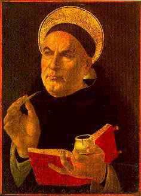

|
|
ST. THOMAS AQUINAS ±
1225-1274
Filosof Itali Thomas
Aquinas masyhur karena tulisan-tulisan teologinya, khusus
tulisan Summa Theologia-nya yang mungkin pernyataan yang
punya bobot kuasa terbesar dalam doktrin teologi Katolik
yang pernah ada.
Tak salah kalau dibilang, tak pernah ada orang yang
menggarap sistem filosofi yang begitu lengkap dan begitu
terperinci dan begitu berpertimbangan cermat seperti
dilakukan oleh Thomas Aquinas. Para pembaca, kalaulah tidak
setuju dengan asumsi atau kongklusi Aquinas, toh tidak bisa
tidak akan terkesan terhadap kehebatan orang ini. Tetapi,
sebagian tulisan-tulisan Aquinas berisikan masalah abstrak
dan metafisika yang awam tidak melihat makna praktisnya. Dia
memasalahkan soal-soal etika juga. Tetapi,
tulisan-tulisannya, walaupun dia sistematiskan
keyakinan-keyakinan Katolik sebelumnya, tidak mencerminkan
perubahan besar dalam cita-cita etika atau dalam pandangan
politik. Juga tampaknya para pembaca tulisan-tulisan Aquinas
tidak lantas jadi pemeluk Katolik atau Kristen. Karena itu,
betapa pun pandai dan cermat spekulasi Aquinas, saya ragu
tulisan-tulisan itu punya pengaruh banyak terhadap perilaku
manusia atau terhadap jalannya arah sejarah. Atas dasar
itulah dia disingkirkan dari daftar utama buku ini.
|